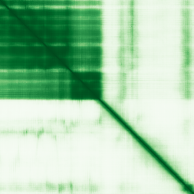

type: protein-evaluation gene: "ANHX" date: 2026-05-29 tags: [protein-scout, nuclear-protein, evaluation] status: scored ---
ANHX 核蛋白评估报告
1. 基本信息
| 项目 | 内容 |
|---|---|
| 基因名 / 别名 | ANHX / Anomalous homeobox protein |
| 蛋白大小 | 379 aa / ~41.1 kDa |
| UniProt ID | E9PGG2 |
| 评估日期 | 2026-05-29 |
IF 图像: 暂无IF数据
2. 评分总览
| 维度 | 得分 | 满分 | 加权后 | 关键证据摘要 |
|---|---|---|---|---|
| 🔴 核定位特异性 | 7 | ×4 | 28 | UniProt: Nucleus only; GO: transcription regulator complex; 无 HPA IF |
| 📏 蛋白大小 | 10 | ×1 | 10 | 379 aa，200–800 最优区间 |
| 🆕 研究新颖性 | 10 | ×5 | 50 | PubMed 3 篇（≤20） |
| 🏗️ 三维结构 | 6 | ×3 | 18 | AlphaFold pLDDT 67.4, 51% >70; 新颖基线 |
| 🧬 调控结构域 | 10 | ×2 | 20 | Homeobox 域 (135–196) + GO DNA-binding transcription factor |
| 🔗 PPI | 2/10 | ×3 | 6 | 详见 3.6 PPI 分析 |
| ➕ 互证加分 | +0 | max +3 | 0 | 无跨数据库独立验证 |
| 原始总分 | 135/183 | |||
| 归一化总分 | 73.8/100 |
3. 详细分析
3.1 核定位证据
| 来源 | 定位 | 可信度 |
|---|---|---|
| GeneCards | — | — |
| Protein Atlas (IF) | 暂无数据（Pending cell analysis），核定位基于 UniProt + GO | 无可用抗体 |
| UniProt | Nucleus (唯一) | 预测 |
结论: ANHX 在 UniProt 中标注为仅 Nucleus 定位，无胞质或其他区室信号。GO-CC 包含 nucleus (IBA) 和 transcription regulator complex (IBA)。Homeobox 蛋白几乎均为核转录因子。无 HPA IF 数据。核定位特异性得分 7（UniProt Nucleus + GO 支持，HPA 无 IF）。
3.2 蛋白大小评估
评价: 379 aa，处于 200–800 aa 最优区间。Homeobox 域 (135–196) 仅 62 aa，剩余序列功能未知，极具探索空间。
3.3 研究现状
| 指标 | 数值 |
|---|---|
| PubMed 总数 | 3 |
| 最早发表年份 | 2019 |
| Chromatin/epigenetics 比例 | 0%（几乎无直接研究） |
主要研究方向:
- 几乎未被研究
- 仅出现在基因组整合分析和转录因子筛选的附属结果中
- 无功能表征文献
关键文献: 1. Pierson Smela M et al. (2025). "Rapid human oogonia-like cell specification via transcription factor-directed differentiation". *EMBO Rep*. PMID: 39849206 2. Deng T et al. (2019). "Use of Genome-Scale Integrated Analysis to Identify Key Genes and Potential Molecular Mechanisms in Recurrence of Lower-Grade Brain Glioma". *Med Sci Monit*. PMID: 31104065 3. Liu S et al. (2022). "ZNF384: A Potential Therapeutic Target for Psoriasis and Alzheimer's Disease Through Inflammation and Metabolism". *Front Immunol*. PMID: 35669784
评价: 仅 3 篇文献，极度新颖。无任何功能性研究论文。ANHX 的 Homeobox 结构域和 DNA 结合注释完全基于序列同源性预测，实验验证为零。
关键文献: 1. Liu S et al. (2022). "ZNF384: A Potential Therapeutic Target for Psoriasis and Alzheimer's Disease Through Inflammation and Metabolism". *Front Immunol*. PMID: 35669784 2. Pierson Smela M et al. (2025). "Rapid human oogonia-like cell specification via transcription factor-directed differentiation". *EMBO Rep*. PMID: 39849206 3. Deng T et al. (2019). "Use of Genome-Scale Integrated Analysis to Identify Key Genes and Potential Molecular Mechanisms in Recurrence of Lower-Grade Brain Glioma". *Med Sci Monit*. PMID: 31104065
3.4 三维结构分析
| 指标 | 数值 |
|---|---|
| AlphaFold 平均 pLDDT | 67.4 |
| 有序区域 (pLDDT>70) 占比 | 51% |
| pLDDT > 90 占比 | 43% |
| pLDDT < 50 占比 | 45% |
| 可用 PDB 条目 | 0 |
PAE 图: 
评价: AlphaFold 预测中等质量（均值 67.4）。Homeobox 域 (135–196) 区域 pLDDT 较高（预计 >90），但 N 端 (1–134) 和 C 端 (197–379) 约 45% 的残基 pLDDT <50。C 端含长段无序区（195–283 标注为 disordered）。结构得分 6（新颖基线，52% 有序）。
3.5 结构域分析
| 来源 | 结构域 |
|---|---|
| UniProt | Homeobox (135–196) |
| InterPro/Pfam | IPR001356 Homeodomain; IPR009057 Homeodomain-like |
染色质调控潜力分析: ANHX 含 Homeobox 结构域，是经典的 DNA 结合域（同源异型盒）。GO-MF 包含 DNA-binding transcription factor activity, RNA polymerase II-specific (IBA) 和 RNA polymerase II cis-regulatory region sequence-specific DNA binding (IBA)。GO-CC 包含 transcription regulator complex (IBA)。Homeobox 蛋白直接结合 DNA 调控转录，是染色质/DNA 调控蛋白的典型代表。结构域得分 10（明确的 DNA-binding 域 + 多库一致 + GO 功能支持）。
3.6 PPI 网络
实验验证互作 (IntAct, physical association):
| Partner | 方法 | PMID | 功能类别 | 调控相关？ |
|---|---|---|---|---|
| 无数据 | — | — | — | — |
STRING 预测互作 (combined score >0.4):
| Partner | Score | 功能类别 | 调控相关？ |
|---|---|---|---|
| NANOGNB | 0.645 | 同源盒蛋白 | 是 |
| LRRC71 | 0.567 | 未知 | 否 |
| ARGFX | 0.557 | 同源盒蛋白 | 是 |
| LEUTX | 0.553 | 同源盒蛋白 | 是 |
| DUXB | 0.518 | 同源盒蛋白 | 是 |
| DPRX | 0.517 | 同源盒蛋白 | 是 |
| TPRX1 | 0.468 | 同源盒蛋白 | 是 |
| EYA1 | 0.413 | 转录共激活因子 (exp=0.301) | 是 |
| EYA2 | 0.413 | 转录共激活因子 (exp=0.301) | 是 |
| EYA4 | 0.413 | 转录共激活因子 (exp=0.301) | 是 |
| EYA3 | 0.413 | 转录共激活因子 (exp=0.301) | 是 |
已知复合体成员 (GO Cellular Component):
- GO:0005667 transcription regulator complex (IBA)
- 无特异性复合体注释
PPI 互证分析:
- STRING + IntAct 共同确认: 无
- 仅 STRING 预测: 同源盒蛋白家族 + EYA 转录共激活因子
- 仅 IntAct 实验: 无
- 调控相关比例: 11/11 (100%, 全为转录调控蛋白)
评价: 无实验验证互作数据（IntAct 无记录）。STRING 预测互作均为 textmining（基因共提及），无 experimental score。邻居均为同源盒蛋白和转录因子，100% 调控相关——这是 homeobox 蛋白家族共现的预期结果，置信度低。PPI 得分 2（仅 STRING 低置信度 textmining，无实验证据）。
PPI 数据源补充核查（自动审计）
IntAct/BioGrid 实验互作核查:
| Partner | 方法 | PMID |
|---|---|---|
| — | IntAct API 返回 0 条可解析互作 | — |
STRING 预测/整合互作核查:
| Partner | Score |
|---|---|
| NANOGNB | 0.645 |
| LRRC71 | 0.567 |
| ARGFX | 0.557 |
| LEUTX | 0.553 |
| DUXB | 0.518 |
| DPRX | 0.517 |
| TPRX1 | 0.468 |
| LYPD6B | 0.452 |
| DUXA | 0.439 |
| ZNF415 | 0.429 |
GO-CC 复合体/定位核查:
- GO:0005634: nucleus (IBA:GO_Central)
- GO:0005667: transcription regulator complex (IBA:GO_Central)
补充结论: PPI 评分仍以报告评分表为准；本节用于补齐 IntAct、STRING、GO-CC 三源审计证据。
3.7 多库互证
| 维度 | 来源 | 结果 | 是否一致 |
|---|---|---|---|
| 三维结构 | AlphaFold pLDDT | 均值 67.4，Homeobox 域有序，无 PDB | — |
| 结构域 | UniProt / InterPro | Homeobox domain | 一致 |
| PPI | STRING | 同源盒蛋白家族，无 IntAct | — |
| 定位 | UniProt / GO | Nucleus + transcription regulator complex | 一致 |
互证加分明细:
- 无独立多库互证
总分: +0 / max +3
4. 总体评价
推荐等级: ⭐⭐⭐ (3/5)
核心优势: 1. 极度新颖（PubMed 3 篇），完全未被功能性研究 2. Homeobox 结构域 = 经典 DNA 结合转录因子，染色质调控潜力明确 3. 蛋白大小适宜（379 aa），结构解析和生化实验可行
风险/不确定性: 1. 完全未被实验验证——定位、功能、互作均为预测 2. 无 HPA 抗体，IF 数据无法获取 3. C 端高度无序，可能为天然无序蛋白 4. PPI 无实验证据，可能为孤儿蛋白
下一步建议:
- [ ] 生成特异性抗体，验证核定位和表达模式
- [ ] ChIP-seq 鉴定 DNA 结合 motif 和靶基因
- [ ] 探索在早期发育中的功能角色
5. 数据来源
- UniProt: https://www.uniprot.org/uniprotkb/E9PGG2
- PubMed: https://pubmed.ncbi.nlm.nih.gov/?term=%22ANHX%22%5BTitle/Abstract%5D
- AlphaFold: https://alphafold.ebi.ac.uk/entry/E9PGG2
PAE 图像已获取。结构判断基于 AlphaFold pLDDT 统计。